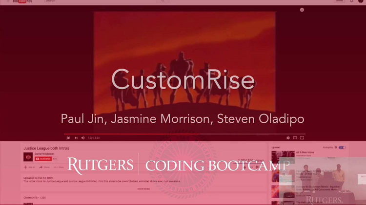

Paul Jin
Exceptionally creative and dependable junior level Web Developer with a passion and superb work ethic. Broadly and deeply knowledgeable in a wide variety of coding as well as the principles and techniques of website construction and maintenance. Highly adept at conveying complex technical information to users friendly manner.
More about Paul
A highly and intensively trained web developer with 6 months experience in a variety of exciting projects at the Rutgers coding bootcamp. A junior level web developer but head and rational approach to problem solving combined with a passion for innovative and fresh ideas has led to a portfolio of impressive website solutions. A strong communicator both in English and Korean with the ability to convey ideas clearly with an emphasis on client satisfaction.
Technical Skills
HTML5, CSS3, GIT, Github, Heroku, Bootstrap, Media Queries, JavaScript, jQuery, Timers, React.
JSON APIs, AJAX, Firebase, NPM Packages, Node.js, MySQL, Express.js, Routing, Handlebars.js, MVC, Authentication, ORM, Sequelize, MongoDB, Meteor.